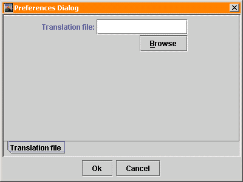

Once you have created a project, you can click on the Project Preferences icon
The dialog below will appear:
|  | Click on the Browse button and locate the Translation file that you have already created. You must specify the Translation for each project that requires it in the Preferences dialog for each project. Many projects can share one Translation file and you can only specify one Translation file per project. Click Ok and then Save your project. |